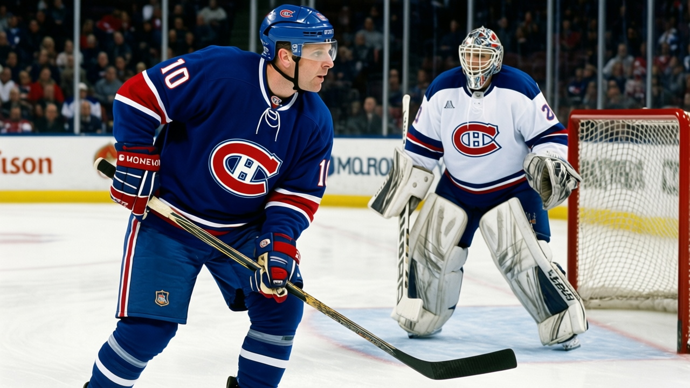
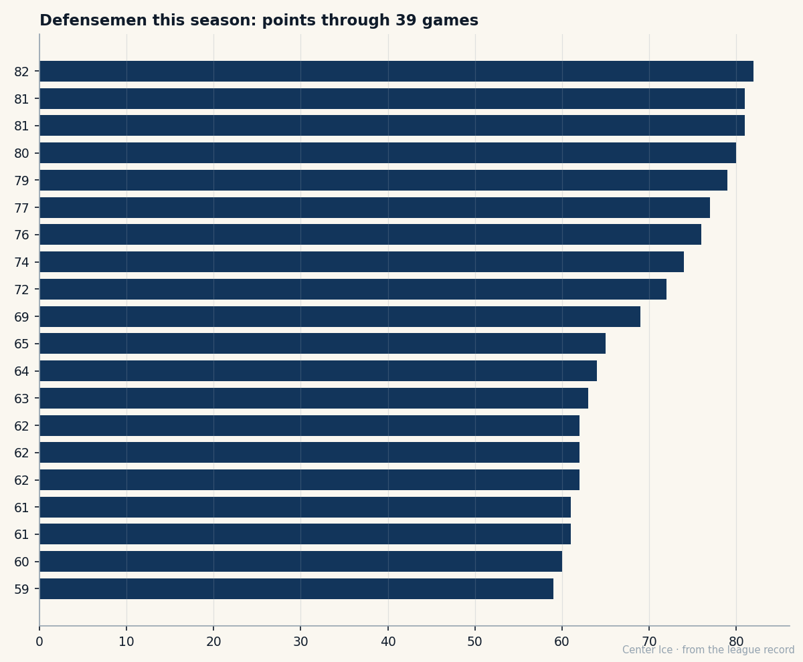

The Reinvention of Mike Komisarek: 3 points last year, 49 this year, and nobody at Michigan saw it coming either
A 22-year-old defenseman from West Islip, New York went from 11.8 minutes a night to 29.9, and the jump is the largest the Development Index has logged this season.
 Carol BinghamFeatures writer · Rinkside
Carol BinghamFeatures writer · RinksideMike Komisarek74 finished last season with 3 points in 24 games. He played 11.8 minutes a night in Montreal, mostly on the third pair, mostly on a team that did not need him to carry the puck out of his own zone. This season he has 49 points in 39 games and 29.9 minutes a night, and the jump is +6 on the Bureau's Development Index, tied for the largest single-season form swing the Index has published this year.
At 22, he was drafted seventh overall in 2001 by  Montreal Canadiens out of the University of Michigan, where he put up 46 points in 80 games across two seasons and earned a First Team Division I All-American nod from the American Hockey Coaches Association in 2002. He grew up on Long Island, played for USA Hockey's National Team Development Program under Aleksey Nikiforov, and signed with Montreal on July 24, 2002. The path was clean. The NHL version of him, the one that played 24 games last year, was not.
Montreal Canadiens out of the University of Michigan, where he put up 46 points in 80 games across two seasons and earned a First Team Division I All-American nod from the American Hockey Coaches Association in 2002. He grew up on Long Island, played for USA Hockey's National Team Development Program under Aleksey Nikiforov, and signed with Montreal on July 24, 2002. The path was clean. The NHL version of him, the one that played 24 games last year, was not.
Three points. One goal, two assists, 15 penalty minutes in 24 games. A healthy scratch more often than a regular.

This year the minutes doubled. The production went from 3 to 49. His 43 assists lead all defensemen in the league, tied with Sandis Ozolinsh of  Carolina Hurricanes at 43. His 49 points and 103.0 pace put him fourth among defensemen, behind Nicklas Lidstrom at 51, Ozolinsh at 50, and Sergei Gonchar at 49. His pace of 103.0 sits just above Gonchar's 100.5.
Carolina Hurricanes at 43. His 49 points and 103.0 pace put him fourth among defensemen, behind Nicklas Lidstrom at 51, Ozolinsh at 50, and Sergei Gonchar at 49. His pace of 103.0 sits just above Gonchar's 100.5.
What changed? The minutes. When a 22-year-old defenseman who grades 84 in checking and 80 in aggression gets 29.9 minutes a night instead of 11.8, the game opens up for him. He gets more zone entries, more touches, more time to make something happen with the puck. The 81 speed and 80 puck sense that were buried in third-pair duty suddenly have room to work.
The grades tell a specific story
Komisarek's Book grade sits at 74, up 6 from his base of 77. The Bureau's Development Index has him in the risers column alongside  Marian Gaborik97, who jumped from 91 to 97.
Marian Gaborik97, who jumped from 91 to 97.
| Attribute | Grade |
|---|---|
| Checking | 84 |
| Speed | 81 |
| Aggression | 80 |
| Puck sense | 80 |
| Shot power | 79 |
| Passing | 77 |
| Fight | 51 |
| Faceoffs | 52 |
| Hero | 52 |
The checking grade is his highest, and that makes sense for a man the coach trusts with 29.9 minutes. The passing at 77 is what turns 6 goals into 49 points: 43 of those points come on the scoresheet as helpers. The fight grade at 51 and the faceoff grade at 52 tell you he is not going to win a board battle against a 250-pound winger, and he doesn't need to. At 6 feet 1 and 225 pounds, with a shot power graded 79, his game is about first reads and quick exits.
His potential reads 90. He is 22 with one year left on a $1.10M contract. The Canadiens, who sit at 32 points in 39 games, are not a team built to contend.  Jose Theodore83 at 83 is the highest-graded player on the roster.
Jose Theodore83 at 83 is the highest-graded player on the roster.  Saku Koivu79 at 79 leads the room in skill.
Saku Koivu79 at 79 leads the room in skill.  Andrei Markov73 at 73, the other good defenseman, has 36 points in 29 games on a 101.8 pace of his own, and his 79 points last season placed him fifth among defensemen in the league.
Andrei Markov73 at 73, the other good defenseman, has 36 points in 29 games on a 101.8 pace of his own, and his 79 points last season placed him fifth among defensemen in the league.
Markov is the template. He was also drafted by Montreal, also a smooth-skating left-shot defender, also looked undercooked at 22. He put up 79 points at 82 games last season, the first year the room around him was good enough to let him roam. Komisarek is producing at a similar clip without that help. The team is not good enough to give him open ice on a nightly basis, and yet the 43 assists say he is finding the space anyway.
The contract year
The deal has one year left at $1.10M. He is on the contract-year class list.  Ilya Kovalchuk91 at 92 overall makes $1.10M.
Ilya Kovalchuk91 at 92 overall makes $1.10M.  Dany Heatley89 at 90 makes $1.10M. Komisarek at 74 makes the same money. If the pace holds, if the Index keeps climbing, the market for a 23-year-old defenseman on the rise is going to be expensive in a summer when several of the league's top blueliners are free agents.
Dany Heatley89 at 90 makes $1.10M. Komisarek at 74 makes the same money. If the pace holds, if the Index keeps climbing, the market for a 23-year-old defenseman on the rise is going to be expensive in a summer when several of the league's top blueliners are free agents.
He had a brief injury, unspecified, between January 1 and January 4, and returned the same day the record logged him back. Nothing structural. The minutes have not dipped.
What the Index sees
The Development Index measures the gap between what the Book says a man is and what he is showing right now. A +6 means his form is six grades above his base. That is the most the Index can show on the riser side. He is tied at the top with five other players: Gaborik,  Mike Cammalleri77,
Mike Cammalleri77,  Vaclav Nedorost78, Jared Aulin69, and Pierre-Marc Bouchard77. The difference is that none of those men went from 3 points to 49 in twelve months.
Vaclav Nedorost78, Jared Aulin69, and Pierre-Marc Bouchard77. The difference is that none of those men went from 3 points to 49 in twelve months.
The kid from West Islip played varsity at St. Anthony's High School, then the New England Jr. Coyotes under Gary Dineen, then the NTDP, then Michigan. All of that is in the file. What comes next is not. At 29.9 minutes a night and 43 assists in 39 games, the answer is probably going to cost someone a lot of money in July.